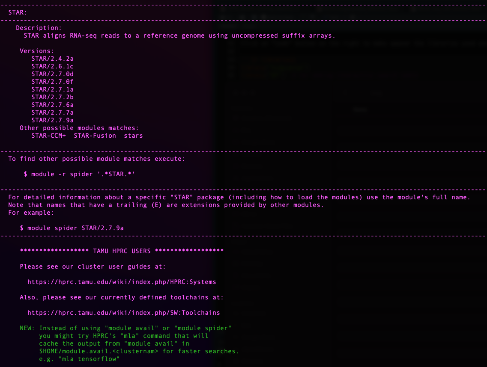

Last updated: 2022-10-25
Checks: 7 0
Knit directory:
locust-phase-transition-RNAseq/
This reproducible R Markdown analysis was created with workflowr (version 1.7.0). The Checks tab describes the reproducibility checks that were applied when the results were created. The Past versions tab lists the development history.
Great! Since the R Markdown file has been committed to the Git repository, you know the exact version of the code that produced these results.
Great job! The global environment was empty. Objects defined in the global environment can affect the analysis in your R Markdown file in unknown ways. For reproduciblity it’s best to always run the code in an empty environment.
The command set.seed(20221025) was run prior to running
the code in the R Markdown file. Setting a seed ensures that any results
that rely on randomness, e.g. subsampling or permutations, are
reproducible.
Great job! Recording the operating system, R version, and package versions is critical for reproducibility.
Nice! There were no cached chunks for this analysis, so you can be confident that you successfully produced the results during this run.
Great job! Using relative paths to the files within your workflowr project makes it easier to run your code on other machines.
Great! You are using Git for version control. Tracking code development and connecting the code version to the results is critical for reproducibility.
The results in this page were generated with repository version 79c77ed. See the Past versions tab to see a history of the changes made to the R Markdown and HTML files.
Note that you need to be careful to ensure that all relevant files for
the analysis have been committed to Git prior to generating the results
(you can use wflow_publish or
wflow_git_commit). workflowr only checks the R Markdown
file, but you know if there are other scripts or data files that it
depends on. Below is the status of the Git repository when the results
were generated:
Ignored files:
Ignored: .DS_Store
Ignored: analysis/.DS_Store
Ignored: data/.DS_Store
Ignored: data/americana/.DS_Store
Ignored: data/americana/STAR_counts_4thcol/.DS_Store
Ignored: data/cancellata/.DS_Store
Ignored: data/cancellata/STAR_counts_4thcol/.DS_Store
Ignored: data/cubense/.DS_Store
Ignored: data/cubense/STAR_counts_4thcol/.DS_Store
Ignored: data/gregaria/.DS_Store
Ignored: data/gregaria/STAR_counts_4thcol/.DS_Store
Ignored: data/gregaria/list/.DS_Store
Ignored: data/metadata/.DS_Store
Ignored: data/nitens/.DS_Store
Ignored: data/nitens/STAR_counts_4thcol/.DS_Store
Ignored: data/piceifrons/.DS_Store
Ignored: data/piceifrons/STAR_counts_4thcol/.DS_Store
Ignored: data/piceifrons/list/.DS_Store
Unstaged changes:
Deleted: img/FASTQC_after.png
Deleted: img/FASTQC_after2.png
Deleted: img/FASTQC_before.png
Deleted: img/FASTQC_before2.png
Deleted: img/ReadPerGene.png
Deleted: img/Schistocerca_rRNA.png
Deleted: img/Schistocerca_rRNA_fasta.png
Deleted: img/Schistocerca_taxonomy.png
Deleted: img/Schistocerca_taxonomy2.png
Deleted: img/Schistocerca_taxonomy3.png
Deleted: img/Schistocerca_taxonomy4.png
Deleted: img/module_spider.png
Note that any generated files, e.g. HTML, png, CSS, etc., are not included in this status report because it is ok for generated content to have uncommitted changes.
These are the previous versions of the repository in which changes were
made to the R Markdown
(analysis/transcriptome-mapping-analysis.Rmd) and HTML
(docs/transcriptome-mapping-analysis.html) files. If you’ve
configured a remote Git repository (see ?wflow_git_remote),
click on the hyperlinks in the table below to view the files as they
were in that past version.
| File | Version | Author | Date | Message |
|---|---|---|---|---|
| html | 8a5660b | MaevaTecher | 2022-10-25 | Build site. |
| html | 8c9a2bf | MaevaTecher | 2022-10-25 | Build site. |
| html | 24831f6 | MaevaTecher | 2022-10-25 | Build site. |
| Rmd | 3b4af4d | MaevaTecher | 2022-10-25 | wflow_publish(c("analysis/_site.yml", "analysis/transcriptome-mapping-analysis.Rmd")) |
| html | 36fc81a | MaevaTecher | 2022-10-25 | Build site. |
| Rmd | f36f2d9 | MaevaTecher | 2022-10-25 | wflow_publish(c("data/cancellata", "analysis/transcriptome-mapping-analysis.Rmd")) |
This document was written in R Markdown, and translated into html
using the R package knitr. Press the buttons labelled
Code to show or hide the R code used to produce each
table, plot or statistical result. You can also select Show all
code at the top of the page.
library("knitr")
library("rmdformats")
library("tidyverse")
library("DT") # for making interactive search table
library("plotly") # for interactive plots
library("ggthemes") # for theme_calc
library("reshape2")
## Global options
options(max.print="10000")
knitr::opts_chunk$set(
echo = TRUE,
message = FALSE,
warning = FALSE,
cache = FALSE,
comment = FALSE,
prompt = FALSE,
tidy = TRUE
)
opts_knit$set(width=75)add description here
add what to install on the Macpro tower e.g., we install a conda environment called rna-seq
We use a Snakemake pipeline for each species. Therefore, verifying that the software is installed as a module beforehand on the Grace cluster at Texas A&M University is essential. In addition, each module requires some dependencies, which is why we need to ensure they will be loaded together.
For this we use the function module spider [targeted
software] w/o the version.
knitr::include_graphics("assets/module_spider.png", error = FALSE)
sessionInfo()FALSE R version 4.2.1 (2022-06-23)
FALSE Platform: x86_64-apple-darwin17.0 (64-bit)
FALSE Running under: macOS Big Sur ... 10.16
FALSE
FALSE Matrix products: default
FALSE BLAS: /Library/Frameworks/R.framework/Versions/4.2/Resources/lib/libRblas.0.dylib
FALSE LAPACK: /Library/Frameworks/R.framework/Versions/4.2/Resources/lib/libRlapack.dylib
FALSE
FALSE locale:
FALSE [1] en_US.UTF-8/en_US.UTF-8/en_US.UTF-8/C/en_US.UTF-8/en_US.UTF-8
FALSE
FALSE attached base packages:
FALSE [1] stats graphics grDevices utils datasets methods base
FALSE
FALSE other attached packages:
FALSE [1] reshape2_1.4.4 ggthemes_4.2.4 plotly_4.10.0 DT_0.26
FALSE [5] forcats_0.5.2 stringr_1.4.1 dplyr_1.0.10 purrr_0.3.5
FALSE [9] readr_2.1.3 tidyr_1.2.1 tibble_3.1.8 ggplot2_3.3.6
FALSE [13] tidyverse_1.3.2 rmdformats_1.0.4 knitr_1.40 workflowr_1.7.0
FALSE
FALSE loaded via a namespace (and not attached):
FALSE [1] fs_1.5.2 lubridate_1.8.0 httr_1.4.4
FALSE [4] rprojroot_2.0.3 tools_4.2.1 backports_1.4.1
FALSE [7] bslib_0.4.0 utf8_1.2.2 R6_2.5.1
FALSE [10] DBI_1.1.3 lazyeval_0.2.2 colorspace_2.0-3
FALSE [13] withr_2.5.0 tidyselect_1.2.0 processx_3.7.0
FALSE [16] compiler_4.2.1 git2r_0.30.1 cli_3.4.1
FALSE [19] rvest_1.0.3 formatR_1.12 xml2_1.3.3
FALSE [22] bookdown_0.29 sass_0.4.2 scales_1.2.1
FALSE [25] callr_3.7.2 digest_0.6.30 rmarkdown_2.17
FALSE [28] pkgconfig_2.0.3 htmltools_0.5.3 dbplyr_2.2.1
FALSE [31] fastmap_1.1.0 highr_0.9 htmlwidgets_1.5.4
FALSE [34] rlang_1.0.6 readxl_1.4.1 rstudioapi_0.14
FALSE [37] jquerylib_0.1.4 generics_0.1.3 jsonlite_1.8.3
FALSE [40] googlesheets4_1.0.1 magrittr_2.0.3 Rcpp_1.0.9
FALSE [43] munsell_0.5.0 fansi_1.0.3 lifecycle_1.0.3
FALSE [46] stringi_1.7.8 whisker_0.4 yaml_2.3.6
FALSE [49] plyr_1.8.7 grid_4.2.1 promises_1.2.0.1
FALSE [52] crayon_1.5.2 haven_2.5.1 hms_1.1.2
FALSE [55] ps_1.7.1 pillar_1.8.1 reprex_2.0.2
FALSE [58] glue_1.6.2 evaluate_0.17 getPass_0.2-2
FALSE [61] data.table_1.14.4 modelr_0.1.9 vctrs_0.5.0
FALSE [64] tzdb_0.3.0 httpuv_1.6.6 cellranger_1.1.0
FALSE [67] gtable_0.3.1 assertthat_0.2.1 cachem_1.0.6
FALSE [70] xfun_0.34 broom_1.0.1 later_1.3.0
FALSE [73] googledrive_2.0.0 viridisLite_0.4.1 gargle_1.2.1
FALSE [76] ellipsis_0.3.2